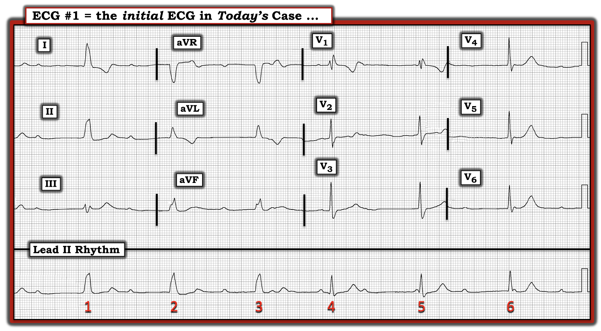
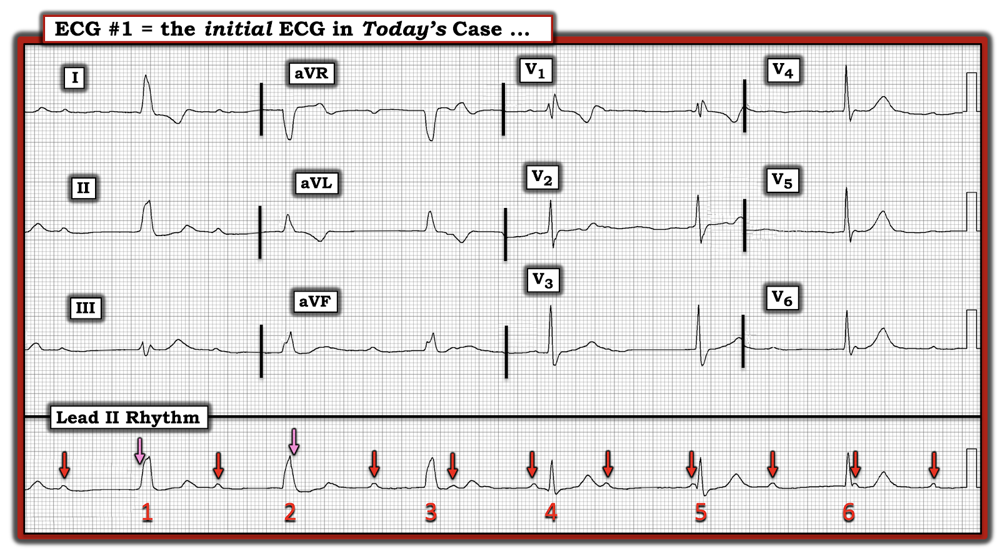
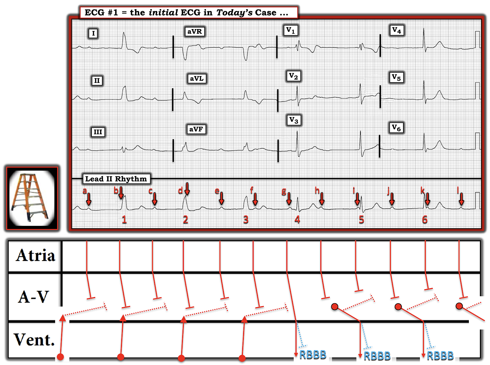
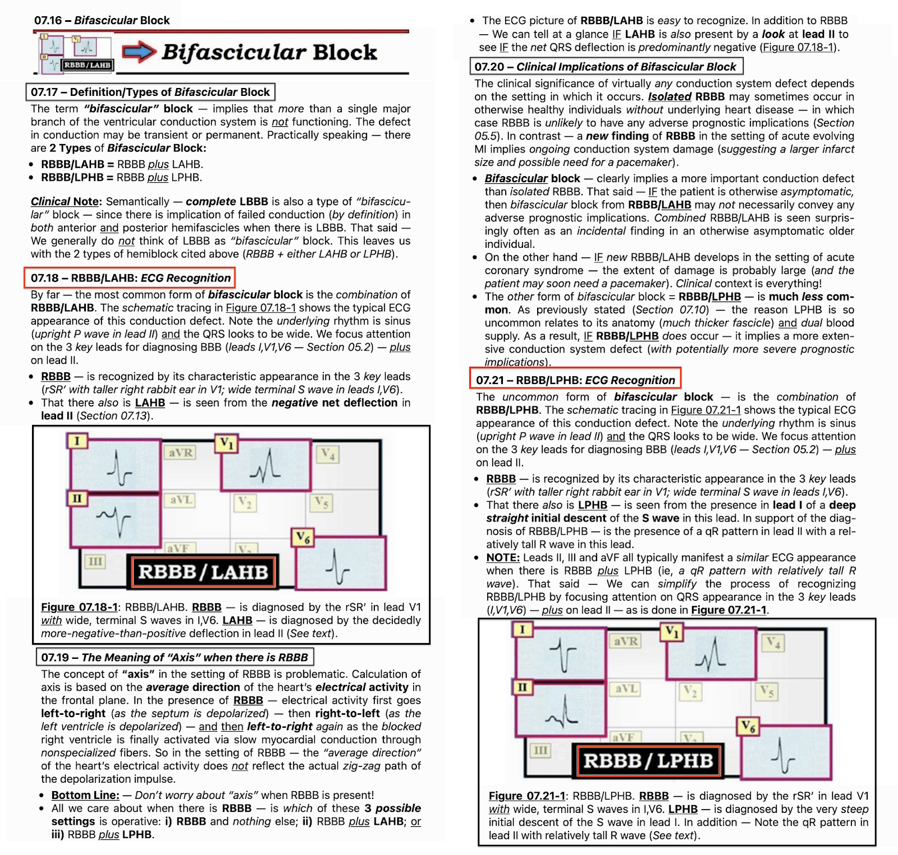
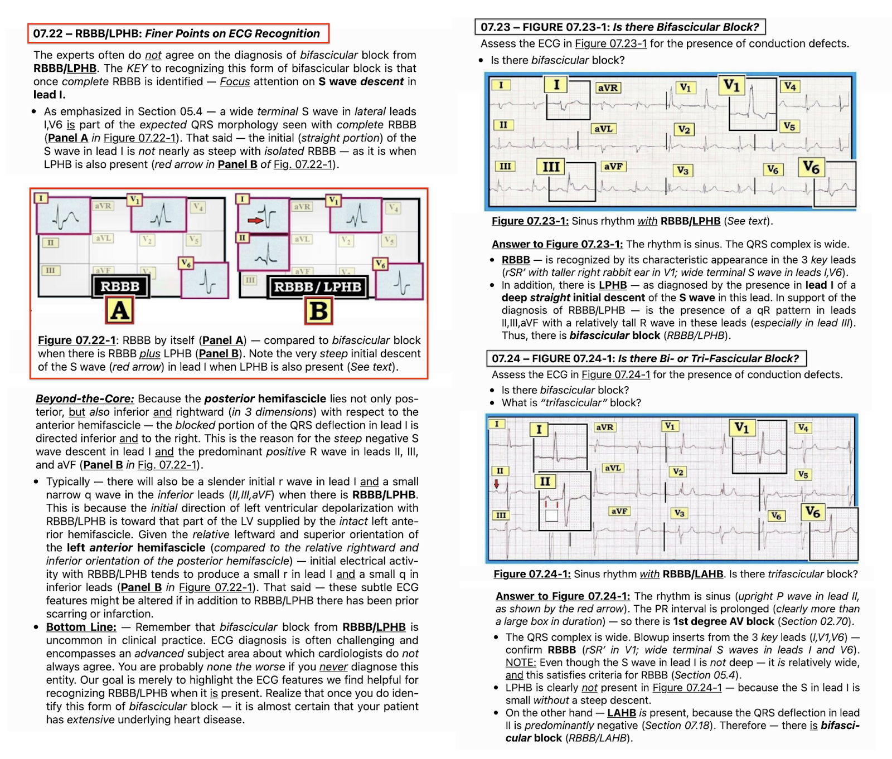
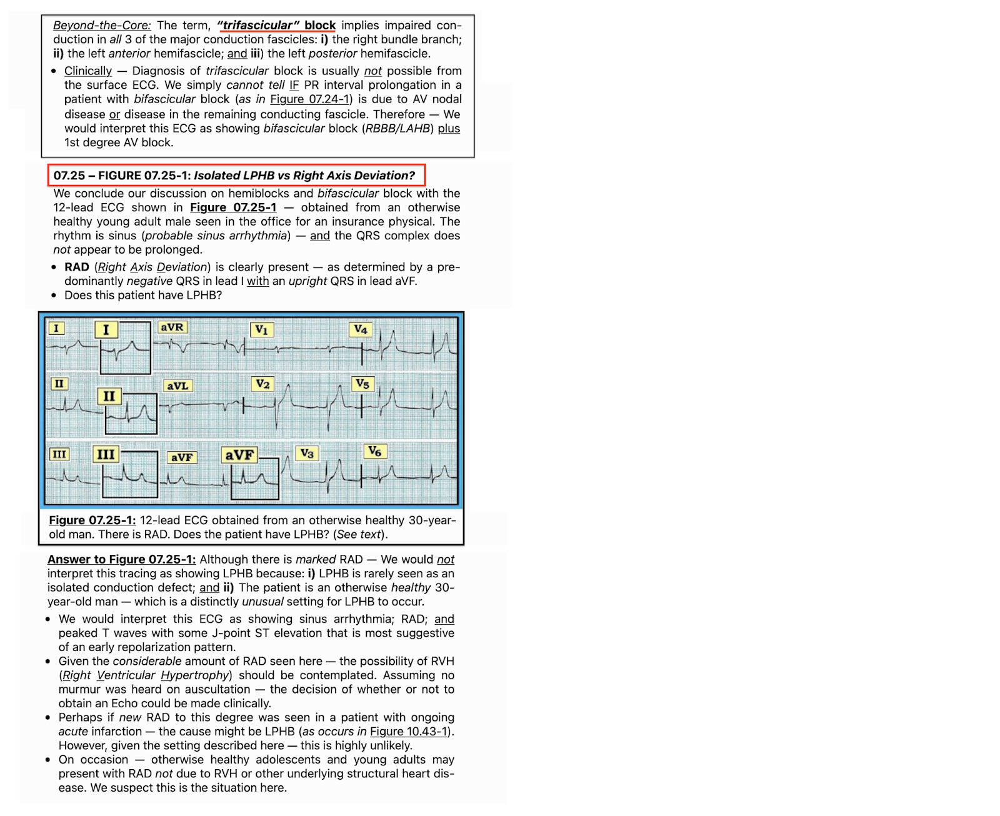

ECG Blog #332 — Blốc AV độ 3 kèm blốc nhánh kép?
Điện tâm đồ trong Hình-1 — của một phụ nữ ở độ tuổi 60, đến khám vì “tức ngực” kéo dài vài ngày. Bản ghi này được chẩn đoán là blốc AV hoàn toàn.
CÂU HỎI:
- BẠN có đồng ý với kết quả đọc này không? HAY — Đây có phải là blốc “ba phân nhánh" (trifascicular block)?
- Có bằng chứng nhồi máu trên bản ghi này không?


SUY NGHĨ CỦA TÔI về điện tâm đồ trong Hình-1:
Như thường lệ – tôi thích bắt đầu việc đọc bằng đánh giá dải nhịp chuyển đạo dài — dùng cách tiếp cận Ps, Qs & 3R để nhớ lại 5 thông số CHÍNH (Xem ECG Blog 185). Tôi thấy dễ nhất (và hiệu quả nhất) là hoãn việc đánh giá điện tâm đồ 12 chuyển đạo cho đến sau khi tôi đã có dịp xem nhịp.
ĐIỂM THEN CHỐT (PEARL) #1: Như tôi vẫn thường nhấn mạnh — bạn chọn đánh giá 5 thông số CHÍNH theo trình tự nào thì cũng không quan trọng — và tôi thường BẮT ĐẦU với bất kỳ thông số nào dễ đánh giá nhất.
- Bản ghi hôm nay cực kỳ phức tạp. Khi mới nhìn nhịp này — đơn giản là không thể thấy ngay: i) Tại sao hình dạng QRS thay đổi? (tức là, blốc nhánh hay các nhát thoát thất?); ii) Tại sao tần số thất thay đổi? — và, iii) Đây là loại blốc AV nào?
- Do những điểm phức tạp trên — "con mắt" của tôi tập trung vào nhát #4 trong Hình-1 vì: i) Nhát này đến sớm hơn dự kiến; ii) Phức bộ QRS của nhát #4 không rộng bằng QRS của 3 nhát đầu; và, iii) Khoảng PR đứng trước nhát #4 = 0.18 giây, khiến đây là nhát duy nhất trong 6 nhát trên bản ghi này có khoảng PR đứng trước với khả năng dẫn truyền hợp lý.
ĐIỂM THEN CHỐT #2: Khi có một dạng blốc AV phức tạp — MANH MỐI tôi ưa thích cho thấy một nhát nhiều khả năng được dẫn truyền — là NẾU bạn thấy một nhát đến sớm hơn dự kiến.
- Ngoài việc đến sớm hơn dự kiến — thêm bằng chứng ủng hộ rằng nhát #4 trong Hình-1 có lẽ có được dẫn truyền đến từ: i) Việc hình dạng QRS thay đổi so với 3 nhát đứng trước; ii) Nhìn vào chuyển đạo V1 ghi đồng thời ở nhát #4 gợi ý hình dạng RBBB (blốc nhánh phải – Right Bundle Branch Block) rất điển hình — dưới dạng rSR' (với sóng S đi xuống dưới đường nền ở chuyển đạo V1 — và sóng R' tận cùng dạng "tai thỏ phải cao hơn"); và, iii) Nhát #4 là nhát duy nhất có khoảng PR bình thường đứng trước — trong khi không khoảng PR nào khác đứng trước 5 nhát còn lại trên bản ghi này có vẻ có khả năng dẫn truyền.
- LƯU Ý: Để biết thêm về CÁCH nhận biết một sóng P có (hay không) khả năng dẫn truyền — Hãy xem Audio Pearl trong PHẦN BỔ SUNG bên dưới.
ĐIỂM THEN CHỐT #3: Như tôi vẫn thường nhấn mạnh — bước đơn giản là đánh dấu sóng P giúp ích đáng kinh ngạc cho việc: i) Xác định XEM có nhịp nhĩ nền đều (hoặc gần đều) hay không; và, ii) Thuận lợi hơn khi đánh giá xem một số (hoặc tất cả) sóng P bạn nhận ra có (hay không) Liên quan với các phức bộ QRS kế cận.
- Trong Hình-1 — tôi bắt đầu “Tìm sóng P” — bằng cách đánh dấu những sóng P mà tôi chắc chắn là có mặt. Tôi đã làm việc này bằng các mũi tên ĐỎ trong Hình-2.
- Tính đến sự dao động nhẹ của khoảng P-P vốn rất hay gặp — có lý khi dự đoán rằng 2 sóng P xoang nữa nhiều khả năng đang ẩn bên trong QRS của nhát #1 và 2 (mũi tên HỒNG trong Hình-2).
ĐIỂM THEN CHỐT #4: Thường thấy tần số nhĩ dao động nhẹ khi có blốc AV độ 2 hoặc độ 3. Hiện tượng này được gọi là loạn nhịp xoang theo pha thất (ventriculophasic sinus arrhythmia) — và được cho là do tưới máu tốt hơn đối với những sóng P "kẹp" một phức bộ QRS ở giữa (dẫn đến khoảng P-P ngắn lại đôi chút). Khi đó, các khoảng P-P không chứa QRS ở giữa có thể dài ra đôi chút.
- Xin nhấn mạnh: Mối liên hệ nêu trên, tức khoảng P-P ngắn lại đôi chút đối với những sóng P "kẹp" một phức bộ QRS ở giữa — không phải lúc nào cũng đúng. Dù vậy — nhìn chung chúng ta có thấy mối liên hệ này đúng với hầu hết các khoảng P-P trong Hình-2.
CÂU HỎI:
- Chẳng phải việc đánh dấu sóng P bằng MŨI TÊN trong Hình-2 — giúp dễ xác định những sóng P nào trong bản ghi hôm nay có khả năng có cơ hội dẫn truyền hay sao?


Có blốc AV hoàn toàn trong Hình-2 không?
Lý tưởng nhất — chúng ta cần thời gian theo dõi dài hơn nhiều để xác định nhịp trong Hình-2. Dù vậy — tôi thấy hữu ích khi chia nhỏ việc đánh giá nhịp thành nhiều Phần:
- Phần-1: Xem 3 nhát đầu trong Hình-2. Phức bộ QRS của 3 nhát đầu này rộng — với hình dạng có thể phù hợp với LBBB (blốc nhánh trái – Left Bundle Branch Block).
- 6 sóng P đi kèm 3 nhát đầu này có vẻ hoàn toàn không liên quan với QRS (tức là, khoảng PR thay đổi liên tục). Các sóng P thứ 1, thứ 3 và thứ 5 trong dải nhịp chuyển đạo II dài ( = 3 mũi tên ĐỎ đầu tiên) rõ ràng đã có quá đủ cơ hội để dẫn truyền — nhưng lại không dẫn truyền được. Điều này gợi ý rằng ít nhất — có blốc AV độ 2 mức độ cao.
- Phần-2: Như chúng ta đã suy luận (tức là, trong Điểm then chốt #1 và #2 ở trên) — mức độ blốc AV của nhịp trong Hình-2 không thể là "hoàn toàn" — vì nhát #4 có được dẫn truyền! Chúng ta biết điều này — vì nhát #4 đến sớm hơn dự kiến — nhát #4 có khoảng PR bình thường đứng trước — và hình dạng QRS của nhát #4 này thay đổi từ dạng giống LBBB của 3 nhát đầu trong Hình-2 — sang hình dạng QRS phù hợp với dẫn truyền kiểu RBBB.
- Phần-3: 2 nhát còn lại trong Hình-2 ( = nhát #5 và 6) không được dẫn truyền. Chúng ta biết điều này vì: i) Không sóng P nào đi kèm 2 phức bộ QRS cuối này xuất hiện ở thời điểm trong chu chuyển tim mà lẽ ra chúng có thể dẫn truyền; và, ii) Các khoảng R-R giữa nhát #4-5 và nhát #5-6 bằng nhau — và — các khoảng R-R này dài hơn đáng kể so với khoảng R-R đứng trước nhát #4 mà chúng ta biết là được dẫn truyền. Điều này gợi ý rằng nhát #5 và 6 hẳn là các nhát "thoát" biểu hiện (ít nhất ở chuyển đạo II) hình dạng QRS tương tự nhát #4 được dẫn truyền.
Hình-2: Tổng Hợp Tất cả Lại
- Blốc AV độ 2 mức độ cao có mặt trong dải nhịp chuyển đạo II dài ở Hình-2 — vì có nhiều sóng P rõ ràng có quá đủ cơ hội để dẫn truyền, nhưng lại không dẫn truyền. Nhưng vì ít nhất 1 phức bộ QRS có được dẫn truyền (tức là, nhát #4) — mức độ blốc AV không thể là hoàn toàn!
- 1 nhát trong Hình-2 có được dẫn truyền ( = nhát #4) — được dẫn truyền trên nền RBBB (dựa trên hình dạng rSR' điển hình của nhát này ở chuyển đạo V1 — như đã nêu ở Điểm then chốt #2 bên trên).
- Vì hình dạng QRS của các "nhát thoát" #5 và 6 trong dải nhịp chuyển đạo II dài tương tự hình dạng QRS của nhát #4 được dẫn truyền — điều này gợi ý rằng vị trí phát sinh các nhát thoát này là từ nút AV. Sóng S tận cùng rộng ở các chuyển đạo bên V5 và V6 ghi đồng thời của nhát #6 — là phù hợp với dẫn truyền kiểu RBBB.
- Có lẽ — 3 nhát đầu trong bản ghi này, vốn biểu hiện phân ly nhĩ thất (AV dissociation) với QRS giãn rộng rõ hơn (tức là, nhát #1,2,3) — phát sinh từ một vị trí "thoát" dưới nút AV (tức là, hoặc từ nhánh phải hoặc từ cơ tim thất).
CÂU HỎI:
- Các số đo tôi thêm vào Hình-3 cho thấy điều gì?

Hình-3: Các số đo của tôi cho thấy gì?
Khi lần đầu thấy bản ghi hôm nay — tôi tự hỏi liệu nhát #1,2,3 có thể là nhát trên thất hay không, do hình dạng QRS của các nhát này rất giống dẫn truyền kiểu LBBB. Vì vậy — ban đầu tôi tự hỏi liệu có BBB luân phiên (blốc nhánh – Bundle Branch Block) hay không — với sự chuyển từ dẫn truyền kiểu LBBB sang RBBB bắt đầu từ nhát #4?
- Tôi thấy thú vị là đo bằng compa (calipers) cho thấy khoảng R-R bằng nhau giữa nhát #1-2 và nhát #2-3 ( = 1480 msec.) — và — khoảng R-R này khác với khoảng R-R giữa nhát #4-5 và nhát #5-6 ( = 1530 msec.). Việc 2 khoảng R-R này khác nhau — gợi ý có 2 vị trí nhịp "thoát" khác nhau.
- Việc thấy hình dạng QRS tương tự (nếu không muốn nói là giống hệt) giữa nhát #4 được dẫn truyền — và các nhát #5,6 "thoát" không được dẫn truyền — về cơ bản khu trú vị trí của ổ "thoát" này tại nút AV.
- Tôi cho rằng phát hiện này khiến khả năng nhát #1,2,3 đại diện cho một ổ thoát thất (có thể phát sinh từ nhánh phải) cao hơn nhiều.
- Cuối cùng — tôi kẻ các đường XANH thẳng đứng đi qua các chuyển đạo ghi đồng thời ở nhát #1, 4 và 6. Các đường này bắt đầu ngay trước khởi điểm của phức bộ QRS. Chúng giải thích tại sao dù có dẫn truyền kiểu RBBB — phức bộ QRS của nhát #4,5,6 trong dải nhịp chuyển đạo II dài lại không trông quá rộng (tức là, phần đầu của QRS ở chuyển đạo II nằm đẳng điện với đường nền).
Có bằng chứng nhồi máu trong Hình-3 không?
Cái thường gặp thì hay gặp. Khi có nhịp chậm + blốc AV độ 2 mức độ cao + RBBB nền — phải cân nhắc mạnh mẽ nhồi máu mới xảy ra như là yếu tố thúc đẩy có thể có của nhiều rối loạn dẫn truyền này.
- Đánh giá thay đổi sóng ST-T trong nhịp thất thường khó (và thường là không thể). Vì vậy — tôi không nghĩ có thể nói được nhiều về khả năng nhồi máu mới xảy ra từ việc đánh giá hình dạng ST-T của nhát #1,2,3 trong Hình-3 — vì 3 nhát đầu này có lẽ phát sinh từ một ổ thoát thất.
- Nhát #4,5,6 biểu hiện dẫn truyền kiểu RBBB. Dù không chắc chắn — tôi nghĩ hình dạng sóng ST-T ở một số chuyển đạo trước ngực có hình dạng dẫn truyền RBBB trên thất này là có thể đáng ngờ về một biến cố tim mới xảy ra (hoặc cấp tính). Cụ thể là: i) Thông thường đoạn ST ở chuyển đạo V1 khi có RBBB bị chênh xuống — chứ không nằm ở đường nền như trong Hình-3. Thông thường cũng không có phần cuối sóng T dương khi có RBBB ở chuyển đạo V1; ii) ST chênh xuống khi có RBBB thường cũng thấy ở chuyển đạo V2 — nên đoạn ST dẹt rõ rệt mà chúng ta thấy ở chuyển đạo V2 trong Hình-3 là không điển hình; và, iii) Sóng T ở chuyển đạo V5,V6 có vẻ lớn hơn dự kiến so với biên độ sóng R ở các chuyển đạo này (tức là, những sóng T này có thể là sóng T tối cấp (hyperacute)).
- Xin nhấn mạnh: Các thay đổi sóng ST-T mô tả ở trên không chắc chắn. Thay vào đó — chúng rất tinh tế! Nhưng trong bối cảnh các rối loạn dẫn truyền nặng mà chúng ta thấy ở bản ghi hôm nay — những thay đổi sóng ST-T tinh tế này là đáng ngờ về một biến cố có thể mới xảy ra — và — mối nghi ngờ này đủ lý do để ghi các bản ghi liên tiếp và xét nghiệm troponin, và có thể thông tim (tùy vào chi tiết của tình huống lâm sàng).
Có Blốc Ba phân nhánh Không?
Thuật ngữ blốc “ba phân nhánh” — hàm ý dẫn truyền bị suy giảm ở cả 3 phân nhánh dẫn truyền chính: i) nhánh phải; ii) phân nhánh trái trước; và, iii) phân nhánh trái sau.
- Thuật ngữ “blốc ba phân nhánh” không còn được khuyến cáo (Surawicz và cs. — JACC: Vol. 53, No. 11, pp 976-981, 2009). Lý do là “sự khác biệt lớn về giải phẫu và bệnh học tạo ra hình ảnh này” — cũng như thực tế là thường không thể chẩn đoán chắc chắn blốc ba phân nhánh từ điện tâm đồ bề mặt. Đơn giản là chúng ta không thể biết LIỆU khoảng PR kéo dài ở bệnh nhân blốc hai phân nhánh là do bệnh lý nút AV hay do bệnh lý ở phân nhánh dẫn truyền còn lại.
- Ngoại lệ: Hiếm khi, có thể chẩn đoán tổn thương cả 3 phân nhánh dẫn truyền — ví dụ, nếu có RBBB và LAHB luân phiên với RBBB/LPHB. Nhưng ngay cả trong trường hợp này — các khuyến cáo hiện hành ưu tiên mô tả rõ ràng bằng cách tránh dùng thuật ngữ “blốc ba phân nhánh” — mà thay vào đó ghi nhận từng rối loạn dẫn truyền có mặt.
- Về bản ghi hôm nay: Như đã nêu ở trên — các rối loạn dẫn truyền trong bản ghi hôm nay gồm: i) Blốc AV độ 2 mức độ cao (nhưng không phải blốc AV hoàn toàn!); và, ii) RBBB nền ở 1 nhát được dẫn truyền, và ở 2 nhát thoát từ nút AV. Vì không có dấu hiệu blốc phân nhánh trái trước hay trái sau — không có bằng chứng nào trong bản ghi hôm nay cho blốc “ba phân nhánh”.
Xác nhận cuối cùng về nhịp trong ca hôm nay:
Cách TỐT NHẤT để chứng minh cơ chế của một nhịp tim phức tạp — là dựng một giản đồ bậc thang (Laddergram) — như tôi minh hoạ trong Hình-4.
- LƯU Ý: Để biết thêm về cách đọc (và/hoặc vẽ) giản đồ bậc thang — Mời xem ECG Blog #188 (gồm tài liệu giảng dạy + ĐƯỜNG LINK tới hơn 50 giản đồ bậc thang có minh hoạ mà tôi đã công bố).


Giải thích giản đồ bậc thang trong Hình-4:
- 3 nhát đầu trong dải nhịp chuyển đạo II dài nhiều khả năng đại diện cho một nhịp thoát thất (đó là lý do các nhát này khởi phát từ đáy của Tầng Thất). Không sóng P nào trong 6 sóng P đầu (đánh dấu từ "a" đến "f") có thể dẫn truyền xuống thất — nên có phân ly nhĩ thất trong nửa đầu của bản ghi này.
- MẤU CHỐT để diễn giải nhịp hôm nay nằm ở việc nhận ra nhát #4 được dẫn truyền, dù kèm RBBB. Việc ít nhất 1 sóng P đúng lúc (on-time) (ở đây là sóng P đánh dấu “g”) có thể dẫn truyền — cho chúng ta biết rằng mức độ blốc AV không hoàn toàn.
- Sau nhát #4 — lại có phân ly nhĩ thất, vì không sóng P đúng lúc nào trong 5 sóng P tiếp theo (đánh dấu từ "h" đến "l") được dẫn truyền xuống thất.
- Đúng là các sóng P đúng lúc đánh dấu “i” và “k” không có “cơ hội” hợp lý để dẫn truyền (vì chúng hoặc xuất hiện với khoảng PR quá ngắn để dẫn truyền — hoặc xuất hiện ngay sau QRS trong thời kỳ trơ tuyệt đối) — nhưng các sóng P đánh dấu “h”, và đặc biệt là “j” lẽ ra phải dẫn truyền được, nhưng lại không dẫn truyền. Điều này ủng hộ kết luận của chúng ta là có blốc AV độ 2 mức độ cao.
- Vì các khoảng R-R giữa nhát #4-5 và nhát #5-6 bằng nhau, và rõ ràng dài hơn khoảng R-R đứng trước nhát #4 được dẫn truyền — và — vì hình dạng QRS của nhát #5 và 6 tương tự (nếu không muốn nói là giống hệt) hình dạng QRS của nhát #4 được dẫn truyền — nhát #5 và 6 có lẽ đại diện cho một ổ thoát bộ nối cũng biểu hiện dẫn truyền kiểu RBBB.
DIỄN TIẾN của ca bệnh:
Đáng tiếc là thông tin theo dõi của tôi về ca hôm nay còn hạn chế. Tôi biết rằng troponin bình thường — và bệnh nhân không bị tăng kali máu. Bệnh nhân được đặt máy tạo nhịp vĩnh viễn — và xuất viện sau vài ngày mà không có thêm biến chứng nào.
==================================
Lời cảm ơn: Xin cảm ơn 林柏志 (từ Đài Loan) đã cung cấp ca bệnh và bản ghi này.
==================================
Các bài ECG Blog Liên quan đến ca hôm nay:
- ECG Blog #205 — Ôn lại Cách tiếp cận hệ thống của tôi trong đọc điện tâm đồ 12 chuyển đạo. (Bài blog này cũng ôn lại khái niệm "Blốc ba phân nhánh").
- ECG Blog #185 — Dùng cách tiếp cận hệ thống để đọc nhịp.
- ECG Blog #188 — Ôn lại cách đọc (và/hoặc vẽ) giản đồ bậc thang (kèm ĐƯỜNG LINK tới hơn 50 ví dụ lâm sàng về giản đồ bậc thang tôi đã vẽ).
- ECG Blog #203 — Ôn lại chẩn đoán trục và blốc phân nhánh trên điện tâm đồ.
- ECG Blog #204 — Ôn lại cách tiếp cận dễ dùng để chẩn đoán blốc nhánh (Bundle Branch Blocks).
- ECG Blog #186 — và ECG Blog #236 — để ôn lại những điều cơ bản về blốc AV độ 2.
- ECG Blog #192 — Ôn lại 3 Nguyên nhân gây phân ly nhĩ thất — và nhấn mạnh tại sao phân ly nhĩ thất không phải là blốc AV hoàn toàn.
- ECG Blog #191 — Nhấn mạnh sự khác biệt giữa phân ly nhĩ thất và blốc AV hoàn toàn.
- ECG Blog #202 — và ECG Blog #257 — Ôn lại các ca về CÁCH nhận biết có (hay không) blốc AV hoàn toàn.
- ECG Blog #247 — Ôn lại một ca phức tạp có phân ly nhĩ thất.
=================================
PHẦN BỔ SUNG (ngày 14 tháng 9 năm 2022): Tôi đã ôn lại một số tài liệu CHÍNH liên quan đến ca hôm nay:
- Audio Pearl về CÁCH nhận biết một sóng P nhất định trong bản ghi blốc AV có khả năng được dẫn truyền hay không.
- 3 hình dưới đây (từ cuốn ECG-2014-PB của tôi) — ôn lại "Quan điểm của tôi" về chẩn đoán trên điện tâm đồ đối với blốc hai phân nhánh.

ECG Media PEARL #61 (5:45 phút Audio) — Ôn lại CÁCH nhận biết LIỆU một sóng P có được dẫn truyền hay không? Trả lời được câu hỏi này là MẤU CHỐT để xác định cơ chế của các bản ghi blốc AV/phân ly nhĩ thất phức tạp.





